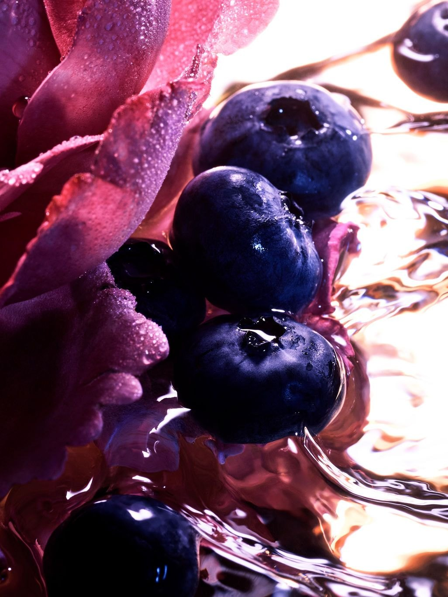
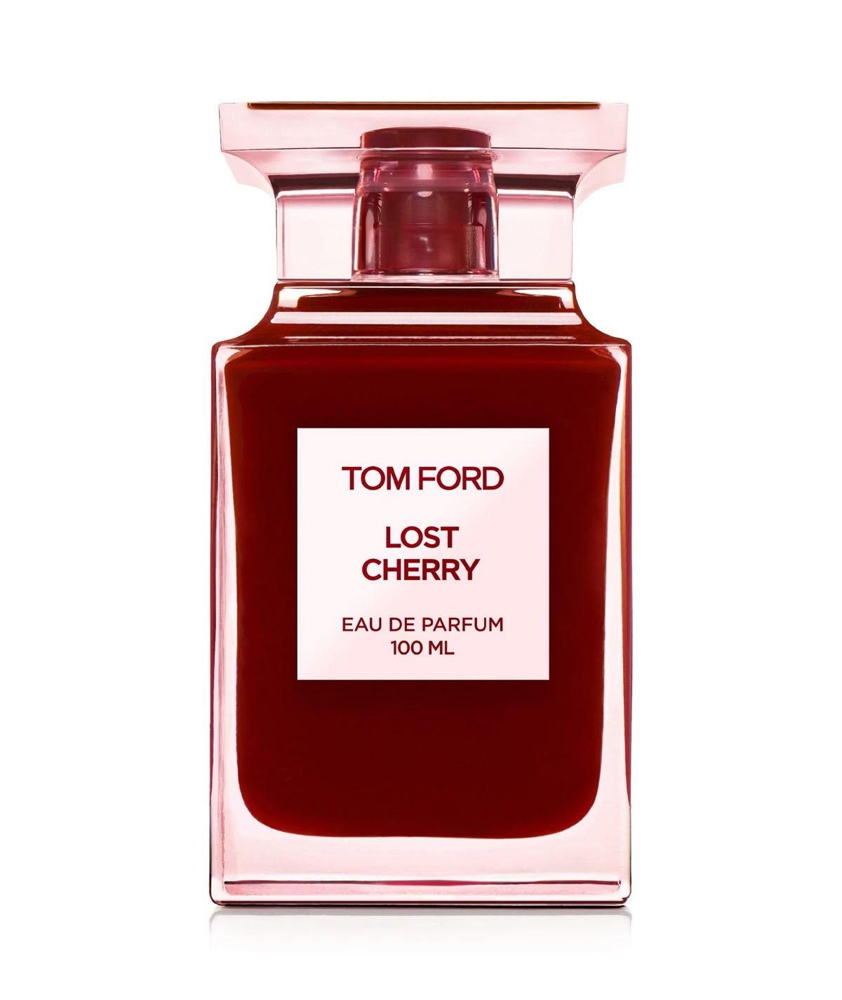

Лонгрид · 16 мин

Ароматы под
состояние,
а не по нотам
Подобрать аромат
Медиа об ароматах
Ароматека ©26
Ароматека рассказывает, как запах работает с настроением, погодой и памятью, — и помогает выбрать аромат под конкретный момент, без регистрации.
«Мы не ищем парфюм по нотам. Мы
ищем аромат для момента — для погоды,
ситуации и того, что хочется почувствовать»
Концепция
Как устроена Ароматека
Шаг 01
Медиа
Статьи, гайды и тренды — основа Ароматеки. Объясняем, как аромат работает с настроением, погодой и памятью.
Шаг 02
Подбор по моменту
Виджет-капсула: погода, сценарий, желаемое состояние. Подбор считается прямо в браузере — без регистрации и личного кабинета.
Шаг 03
Карточка аромата
Каждый аромат описан тегами: сценарий, температура, отличие. Ноты, шлейф и стойкость — на странице аромата.
Ароматы
Каталог
Карточки ароматов: ноты, характер, как звучит и когда носить. Одна уже открыта — как пример.

Tom Ford
Lost Cherry
Чёрная вишня с горьким миндалём: тепло и немного игры. Собирает после долгого дня и звучит уверенно.
Страница аромата